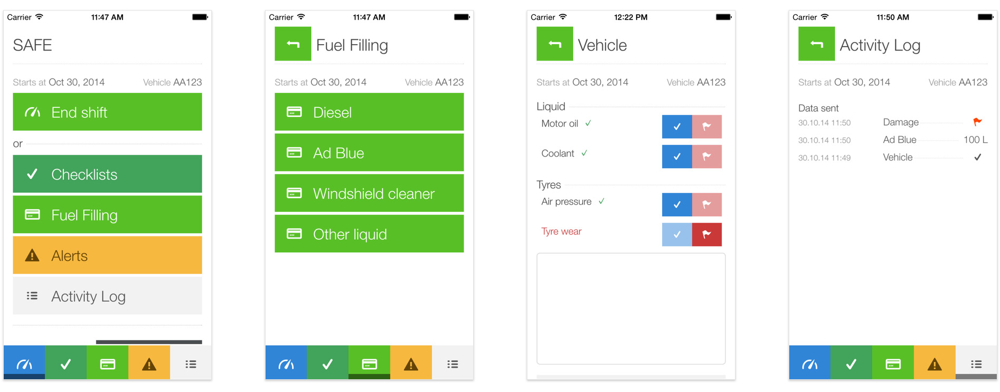

В работе грузовых перевозок очень много бумажной работы. Каждая поездка сопровождается проверкой машины и грузового прицепа в трёх экземплярах. Работодатели вынуждены держать отдел клерков для работы с отчётностью.
Водители не отличаются пунктуальностью и честностью, поэтому забывают взять или заполнить формы. Также хищение топлива и левые маршруты причиняют катастрофические убытки в один миллиард евро в год в одной Норвегии.
Приложение С-Е-Й-Ф заменяет бумажные формы проверки автомобиля, контролирует покупку бензина и ГСМ и помогает водителям оформить ДТП или несчастный случай для уведомления работодателя.
Данные из приложений в реальном времени отображаются в веб-приложении работодателя, а аварийные ситуации сразу отсылаются на электропочту для оперативного реагирования.
Разработка пользовательских сценариев использования, отрисовка интерфейса системы, программирование гибридного веб-приложения на Ангуляре и Кордове.